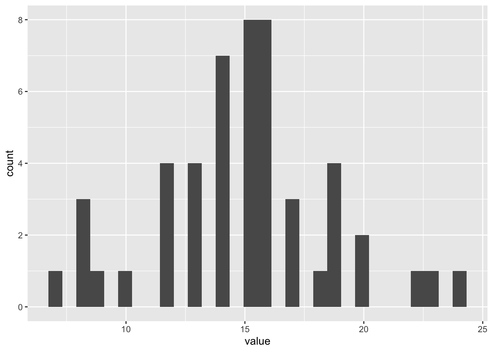

── Attaching core tidyverse packages ──────────────────────── tidyverse 2.0.0 ──
✔ dplyr 1.1.4 ✔ readr 2.1.5
✔ forcats 1.0.0 ✔ stringr 1.5.1
✔ ggplot2 3.5.1 ✔ tibble 3.2.1
✔ lubridate 1.9.3 ✔ tidyr 1.3.1
✔ purrr 1.0.2
── Conflicts ────────────────────────────────────────── tidyverse_conflicts() ──
✖ dplyr::filter() masks stats::filter()
✖ dplyr::lag() masks stats::lag()
ℹ Use the conflicted package (<http://conflicted.r-lib.org/>) to force all conflicts to become errors2 Compter
On a les tirages bien propres sur eux. Et on va apprendre à compter après avoir chargé le tidyverse et les données.
2.1 Les groupes
Je pense qu’il est illusoire et inutile de se baser simplement sur les numéros sortis. Si c’était possible, cela aurait surement déjà était fait. Et comme ce n’est pas la cas…
2.1.1 Les sorties et les écarts
Les sorties correspondant aux nombres de fois que chaque numéro et étoile est sorti1.
1 en bon français, on appelle ça « enfoncer une porte ouverte »
Les écarts correspondent aux nonbre de tirages entre deux sorties.
Par exemple
Soient les \(3\) tirages suivants :
T1 1 2 3
T2 2 4 5
T3 1 3 6On part du principe que avant ce tirage toutes les sorties et tous les écarts étaient à \(0\).
pour le tirage T1 tous les sorties et les écarts sont à \(0\)
| numéros | 1 | 2 | 3 | 4 | 5 | 6 |
|---|---|---|---|---|---|---|
| sorties | 0 | 0 | 0 | 0 | 0 | 0 |
| écarts | 0 | 0 | 0 | 0 | 0 | 0 |
pour le tirage T2 les sorties du tirage précédent augmentent de \(1\) alors que les écarts restent à \(0\) ; par contre les écarts des numéros non sortis augmentent de \(1\) ;
| numéros | 1 | 2 | 3 | 4 | 5 | 6 |
|---|---|---|---|---|---|---|
| sorties | 1 | 1 | 1 | 0 | 0 | 0 |
| écarts | 0 | 0 | 0 | 1 | 1 | 1 |
pour le tirage T3, c’est pareil
| numéros | 1 | 2 | 3 | 4 | 5 | 6 |
|---|---|---|---|---|---|---|
| sorties | 1 | 2 | 1 | 1 | 1 | 0 |
| écarts | 1 | 0 | 1 | 0 | 0 | 2 |
pour le tirage T4, on met à jour les d’après le tirage T3
| numéros | 1 | 2 | 3 | 4 | 5 | 6 |
|---|---|---|---|---|---|---|
| sorties | 2 | 2 | 2 | 1 | 1 | 1 |
| écarts | 0 | 1 | 0 | 1 | 1 | 0 |
etc.
2.2 Le code
On va fabriquer des vecteurs pour les données
2.2.1 Les données
nuS_MA- pour le nombre de sorties des numéros de \(1\) à \(50\) du mardli
nuS_VE- pour le nombre de sorties des numéros de \(1\) à \(50\) du vendredi
nuS_TO- pour le nombre de sorties des numéros de \(1\) à \(50\) en tout
nuE_MA- pour les écarts des numéros de \(1\) à \(50\) du mardi
nuE_VE- pour les écarts des numéros de \(1\) à \(50\) du vendredi
nuE_TO- pour les écarts des numéros de \(1\) à \(50\) en tout
Donc
et pareil pour les étoiles, mais préfixés avec et
2.2.2 Essai
```{r}
for (i in 1:150) {
a <-
euromil |>
slice(i)
j <- a$jt
b <- c(a$b1, a$b2, a$b3, a$b4, a$b5)
e <- c(a$e1, a$e2)
# pour être sûr que les jours ne soient QUE MA ou VE
# un petit test ne fait pas de mal
flag_jour <- FALSE
# pour les tirages du MArdi
if (j == "MA") {
flag_jour <- TRUE
# incrémente les sorties des numéros
nuS_MA[b] <- nuS_MA[b] + 1
# incrémente les sorties des étoiles
etS_MA[e] <- etS_MA[e] + 1
# incrémente tous les écarts des numéros
nuE_MA <- nuE_MA + 1
# incrémente tous les écarts des étoiles
etE_MA <- etE_MA + 1
# met les écarts des numéros sortis à 0
nuE_MA[b] <- 0
# met les écarts des étoiles sorties à 0
etE_MA[e] <- 0
} # fin du test if (j == "MA")
# pour les tirages du VEndredi
if (j == "VE") {
flag_jour <- TRUE
# incrémente les sorties des numéros
nuS_VE[b] <- nuS_VE[b] + 1
# incrémente les sorties des étoiles
etS_VE[e] <- etS_VE[e] + 1
# incrémente tous les écarts des numéros
nuE_VE <- nuE_VE + 1
# incrémente tous les écarts des étoiles
etE_VE <- etE_VE + 1
# met les écarts des numéros sortis à 0
nuE_VE[b] <- 0
# met les écarts des étoiles sorties à 0
etE_VE[e] <- 0
} # fin du test if (j == "VE")
# si c'est bien un MA ou un VE qui a été
# traité avant
# traite les tirages en TOut
if (flag_jour == TRUE) {
# incrémente les sorties des numéros
nuS_TO[b] <- nuS_TO[b] + 1
# incrémente les sorties des étoiles
etS_TO[e] <- etS_TO[e] + 1
# incrémente tous les écarts des numéros
nuE_TO <- nuE_TO + 1
# incrémente tous les écarts des étoiles
etE_TO <- etE_TO + 1
# met les écarts des numéros sortis à 0
nuE_TO[b] <- 0
# met les écarts des étoiles sorties à 0
etE_TO[e] <- 0
} # fin du test if (flag_jour == TRUE)
else {
# si le test du jour a raté
# afficher le tirage incriminé
print(a)
# et on arrête tout
break
} # fin du else
} # fin de la boucle for (i in 1:XX)
``````{r}
summary(nuS_MA)
hist(nuS_MA,
main = paste("histrogramme des NOMBRES de sorties du MArdi"))
``` Min. 1st Qu. Median Mean 3rd Qu. Max.
3.0 6.0 7.0 7.5 9.0 14.0 ```{r}
summary(nuS_VE)
hist(nuS_VE,
main = paste("histrogramme des NOMBRES de sorties du VEndredi"))
``` Min. 1st Qu. Median Mean 3rd Qu. Max.
2.0 6.0 7.5 7.5 9.0 13.0 
```{r}
summary(nuS_TO)
hist(nuS_TO,
main = paste("histrogramme des sorties en TOut"),
ylab = paste("Nombres de fréquences"),
xlab = paste("Nombres de sorties"))
``` Min. 1st Qu. Median Mean 3rd Qu. Max.
7.00 13.00 15.00 15.00 16.75 24.00 Min. 1st Qu. Median Mean 3rd Qu. Max.
17.00 21.50 24.50 25.00 28.75 33.00 Warning in geom_histogram(aes(x = value, binwidth = 10)): Ignoring unknown
aesthetics: binwidth`stat_bin()` using `bins = 30`. Pick better value with `binwidth`.